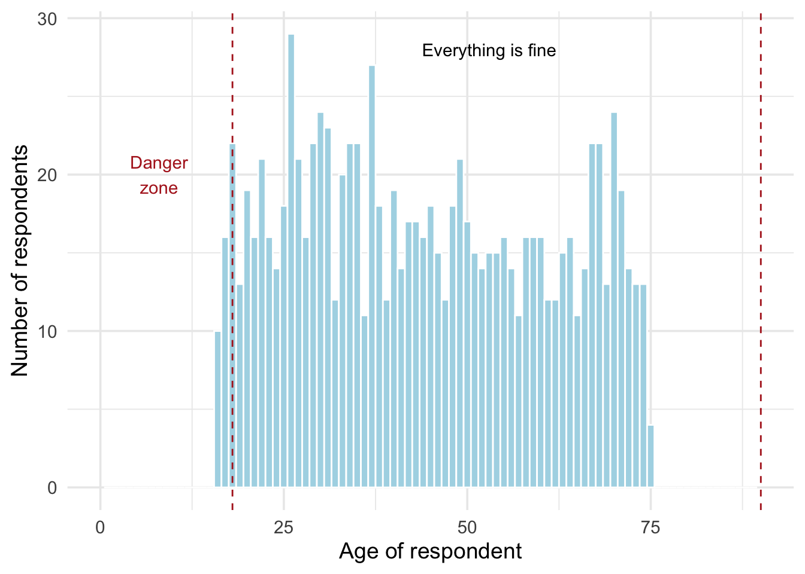

Packages used in this post
library(tidyverse)
library(kableExtra)
theme_set(theme_minimal(base_size = 14))Paw Hansen
August 23, 2023
I am working my through the so-far-wonderful book Telling stories with data by Rohan Alexander. One thing I really like about the book is the heavy emphasis on simulation and all the things you can do with that: present results, validate models, plan research designs, and many, many other common tasks when doing research.
Another part to like is the discussion on how you should write tests throughout a data science project. You want to make sure your data is what you think it is. For instance, you might think that all your key variables are of the right class - but you should probably test that!
This is one thing I would have liked to know more about when I started out doing statistical analysis. Back then, I would often run into the problem that my code would not run1. Often, this was due to tiny issues in the data: a variable that should have been a factor was perhaps coded as a character. Or, in the process of joining multiple datasets, I had lost some observations without noticing.
These ‘little things’, make up a huge part of what makes data science occasionally frustrating. And they can undermine an otherwise well-thought and thoroughly-carried-out analysis.
Writing test sounds harder than it is. Of course, while some tests can be quite long to write and hard to get your head around, most takes only a few seconds to write-and-run, and doing so will save you considerable time. Trust me.
Rohan recommends the following suite of minimum things to test for:
Internal consistency and external validity are quite project-specific, so I’ll focus on internal validity.
Following Alexander’s advice, you should pay attention to the following:
Two quick ways of testing are (1) make a graph and (2) look at counts. A final and (3) is to write out formal test, resulting in a true/false. Importantly, you don’t have run a whole bunch of tests. Write a few, perhaps targeting specific areas of concern.
Let’s have look at a few examples. Say we intended to do a survey on adult people’s preferences for desert. Specifically, we want to know if people prefer ice cream or pancakes, and how these preferences relate to respondents’ age and sex.
One cool aspect about testing is that we can simulate data ahead of running the survey, write tests for the simulated data - and then use those exact same tests for when we have acquired the actual data!
Let’s simulate some data, which will contain several problems:
Looking at the list above, let’s begin by testing the boundary conditions. We have one numeric variable: age. Say, our survey was only supposed to go out to people between 18 and 90 years. To check, we could make a basic histogram:
sim_dat |>
ggplot(aes(age)) +
geom_histogram(binwidth = 1,
color = "white",
fill = "lightblue") +
annotate(geom = "text",
label = str_wrap("Danger zone", 6),
x = 8,
y = 20,
color = "firebrick") +
annotate(geom = "text",
label = "Everything is fine",
x = 53,
y = 28) +
geom_vline(xintercept = c(18, 90), color = "firebrick", lty = "dashed") +
xlim(0, 90) +
labs(
x = "Age of respondent",
y = "Number of respondents")Warning: Removed 2 rows containing missing values (`geom_bar()`).
The histogram reveals that we have people in our sample who a under 18; they should probably be excluded. Another way of doing the same test would be to see how many observations fall in the right range. This number should of course be 100 percent.
[1] "97.4 percent of observations passes the test"For the two categorical variables, sex and preference, we could do a basic count:
# A tibble: 3 × 2
sex n
<chr> <int>
1 female 387
2 male 408
3 <NA> 205# A tibble: 3 × 2
preference n
<chr> <int>
1 broccoli 180
2 ice cream 414
3 pancakes 406For sex, we have several missing values that we would have to consider. Again, we could write a test to tell exactly how many respondents had missing values on the sex variable:
[1] "20.5 percent of respondents have missing values on the sex variable"We could also just ask, if the variable had no missing values and hence could pass a true/false test:
For the outcome variable, several respondents prefer broccoli, which wasn’t one of the two options we intended to study. This should warn us that the survey was set up wrong2.
Before we go, let’s also have a look at the variable classes since having variables coded as the wrong class can have substantial impact on your analysis. A quick and informal way of looking at the class is by using glimpse():
Rows: 1,000
Columns: 3
$ age <dbl> 50, 36, 49, 39, 67, 18, 20, 70, 35, 31, 60, 17, 28, 60, 48,…
$ sex <chr> "female", "female", "male", "male", "female", "female", NA,…
$ preference <chr> "ice cream", "ice cream", "pancakes", "ice cream", "pancake…Both sex and preference are coded as characters but they should probably be factors. We can easily change that, though. Let’s also clean up the other issues from before:
And now we have cleaned dataset, which would pass our tests. Just one example:
Writing test prior to data analysis can save you time spent debugging code and also increase confidence in your results because your model is built with the data you think it is. In this post, I have mentioned three basic ways of testing your data: graphing, counting, and writing formal tests. Now, go on and test your data!
That still happens! But at least not as often, and now I know better what to do about it. Also, occasionally my code would run - but give me wrong results.↩︎
In a real-life study, this type of error should probably make us consider if our survey had been implemented in such a flawed way that we could not use the data at all.↩︎